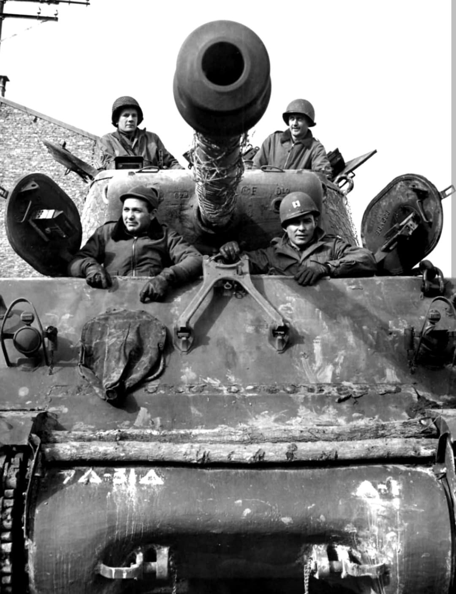
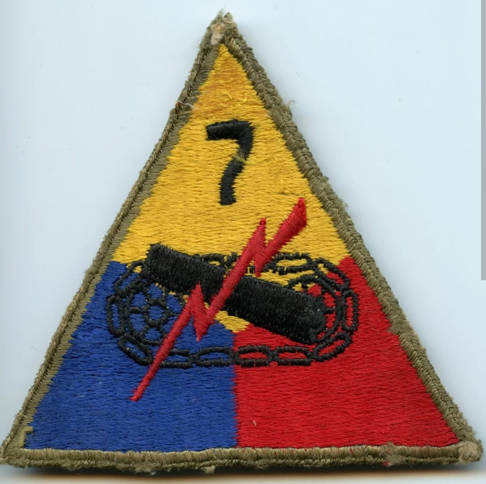
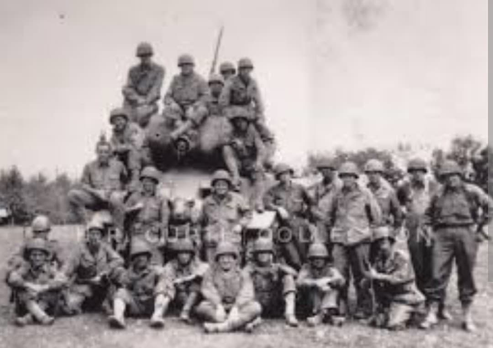

Les défenseurs acharnés de Saint-Vith et de la ligne Siegfried au cœur des combats en Europe

La 7th Armored Division, connue sous le nom de « Lucky Seventh » (Le Septième Chanceux), est une division blindée de l'US Army qui a joué un rôle crucial sur le théâtre européen de la Seconde Guerre mondiale.
Engagée dès l'été 1944 après le débarquement, elle s'est illustrée par des combats défensifs et offensifs d'une intensité rare, notamment lors de la défense héroïque du carrefour stratégique de Saint-Vith pendant la bataille des Ardennes.
Activée en mars 1942 à Fort Knox (Kentucky) sous les ordres du major général **Lindsay P. Hobbs**, la division est entraînée pour combiner puissance de feu mobile et flexibilité tactique face aux divisions panzer allemandes.
Son insigne d'épaule distinctif reprend le chiffre 7 intégré dans un bouclier coloré, symbolisant la force et l'appartenance à l'arme blindée de cavalerie de l'armée américaine.

Arrivée en France par Utah Beach en août 1944, la 7th Armored est rapidement rattachée à la 3e armée de Patton. Elle participe activement aux opérations de nettoyage et de sécurisation dans l'ouest, avant de foncer vers l'est de la France.
Elle participe à la libération de nombreuses villes et joue un rôle de premier plan dans les combats acharnés pour percer la redoutable **ligne Siegfried** à la frontière allemande à l'automne 1944.

En décembre 1944, lors du déclenchement de l'offensive allemande dans les Ardennes (opération *Wacht am Rhein*), la 7th Armored Division (avec des éléments rattachés) est positionnée en urgence pour défendre le nœud de communication vital de **Saint-Vith** en Belgique.
Pendant plusieurs jours de combats d'une férocité extrême contre les forces supérieures de la Wehrmacht, la division bloque l'avance ennemie, brisant le calendrier initial de la contre-offensive allemande avant de se replier en bon ordre.
Après les épreuves des Ardennes, la « Lucky Seventh » participe à l'offensive générale pour écraser le Troisième Reich. Elle franchit le Rhin, participe à la réduction de la poche de la Ruhr et pousse profondément en territoire allemand jusqu'à la fin de la guerre en mai 1945.
Page du Musée HOP WW2 – Section Unités & Divisions